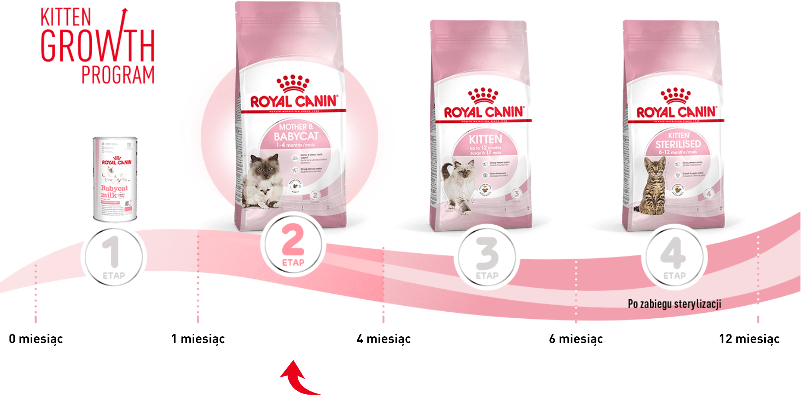
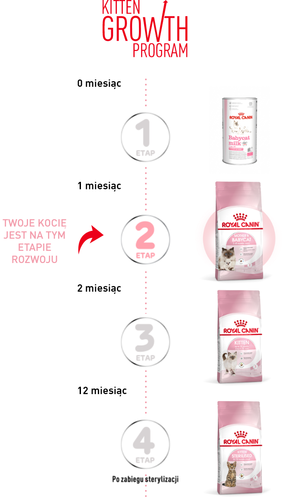
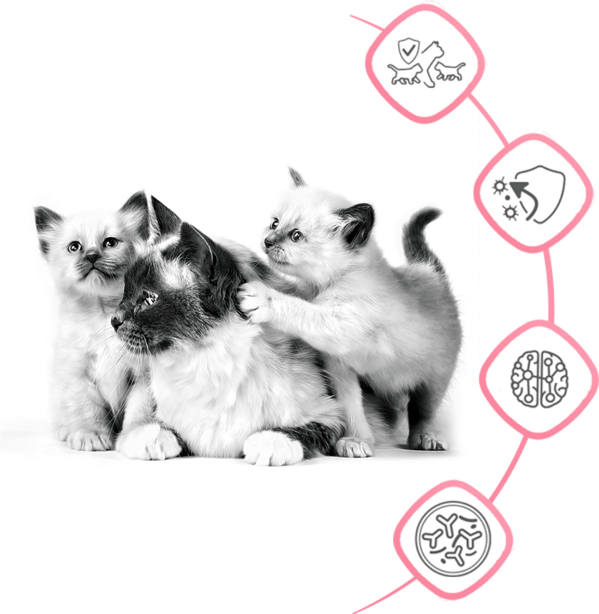
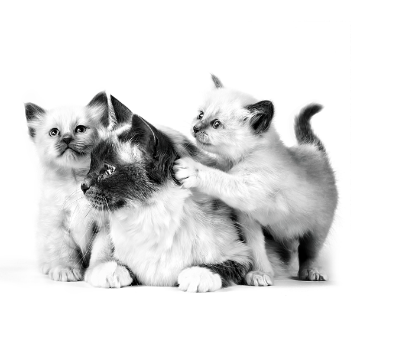
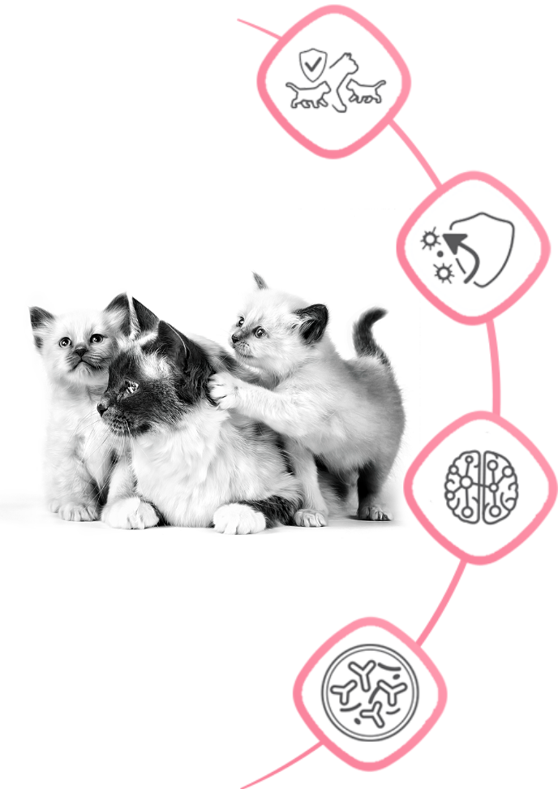
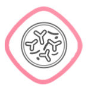
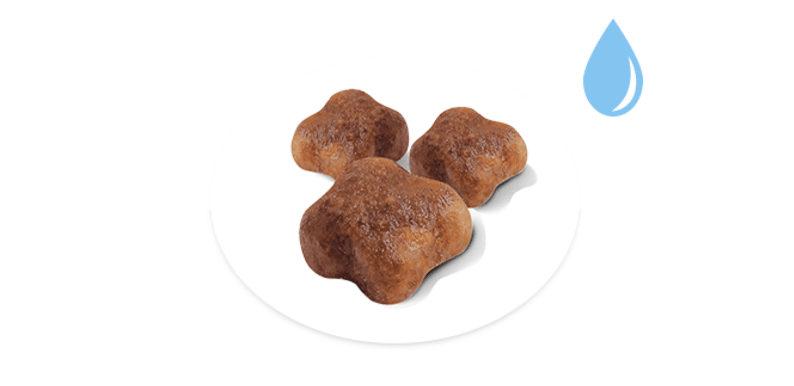
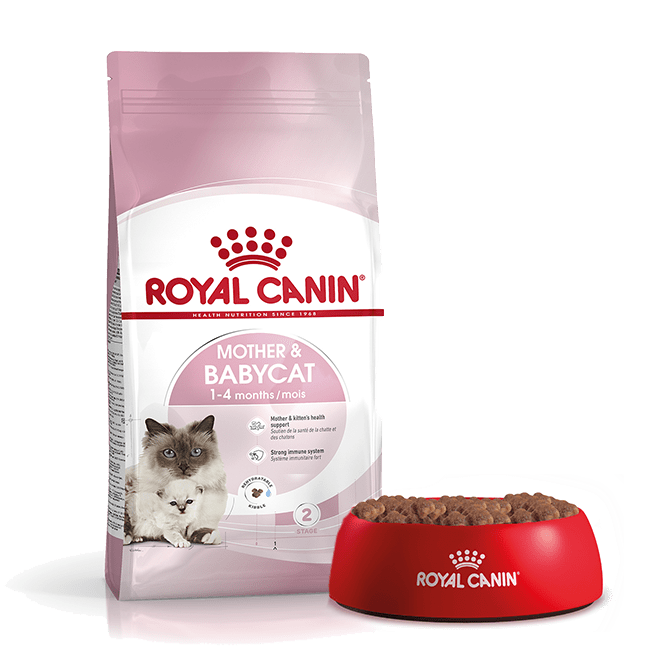
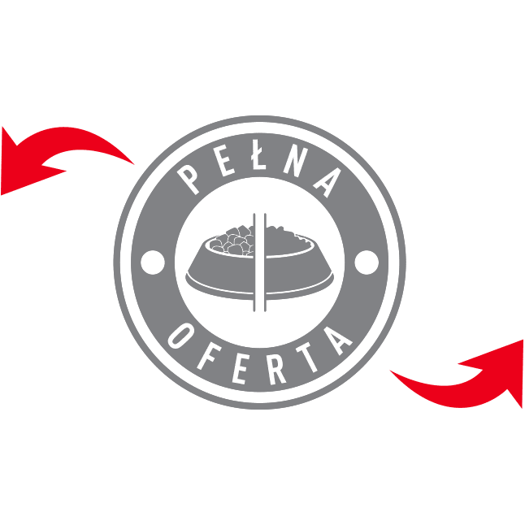
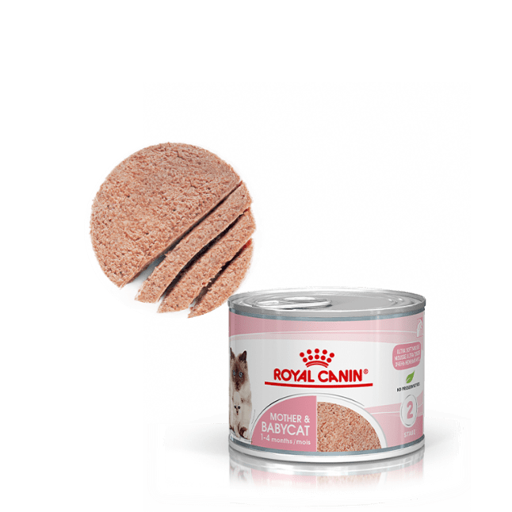

Wczesne wybory żywieniowe mają wpływ na zdrowie kocięcia przez resztę jego życia.
PROGRAM ŻYWIENIA KOCIĄT ROYAL CANIN
wspomaga rozwój Twojego kocięcia w okresie wzrostu.
wspomaga rozwój Twojego kocięcia w okresie wzrostu.


KORZYŚCI ZDROWOTNE



WSPOMAGANIE KOTEK I ICH KOCIĄT
Karma ROYAL CANIN® Mother & Babycat to unikalne rozwiązanie żywieniowe dostosowane do potrzeb kotek w ciąży i laktacji oraz kociąt do 4 miesiąca życia.
SILNY UKŁAD ODPORNOŚCIOWY
Nowonarodzone kocięta otrzymują przeciwciała wraz z siarą matki, co chroni je przez pierwsze tygodnie życia. Karma ROYAL CANIN® Mother & Babycat zawiera kompleks witamin C i E o udowodnionym działaniu, wspomagającym zdrowy rozwój układu odpornościowego.
ROZWÓJ MÓZGU
Receptura karmy ROYAL CANIN® Mother
& Babycat została wzbogacona w kwasy tłuszczowe omega 3 (DHA), wspomagające rozwój mózgu i narządu wzroku u kociąt.

WSPIERANIE MIKROBIOMU
Dzięki kombinacji korzystnych prebiotyków (MOS) i wysokostrawnych białek, karma wspomaga również zdrową równowagę mikrobioty jelitowej i prawidłowe trawienie.
ŁATWE DO NAMOCZENIA
KROKIETY

Opcja apetycznej papki
Łatwa do namoczenia
Doskonała w okresie odsadzania
ŁĄCZENIE KARMY SUCHEJ I KARMY
MOKREJ - OPTYMALNE KARMIENIE

KARMA SUCHA:
- łatwe do namoczenia krokiety
- wysoka wartość energetyczna
- optymalna dla rosnących kociąt


KARMA SUCHA:
- wysoka smakowitość
- ułatwienie kociętom jedzenia
- sprzyja nawodnieniu organizmu
NASZE ZAANGAŻOWANIE W ZDROWIE SZCZENIĄT I KOCIĄT: Firma Royal Canin, stale współpracując z wiodącymi uczelniami i uniwersytetami weterynaryjnymi, hodowcami oraz innymi ekspertami w dziedzinie zwierząt towarzyszących, wciąż poszerza wiedzę na temat zdrowego żywienia psów i kotów.
ZWIERZĘTA: kotki i suki hodowlane oraz ich potomstwo z całego świata przetestowało nasze nowe receptury, które wprost uwielbiają!
LEKARZE WETERYNARII: każda receptura została opracowywana przez zespół Royal Canin: lekarzy weterynarii, naukowców, wykwalifikowanych dietetyków oraz certyfikowanych ekspertów weterynaryjnych.
HODOWCY: karmy zostały przetestowane, zatwierdzone i rekomendowane przez 99% hodowców. To profesjonalni eksperci dostarczający nam pełnej informacji zwrotnej na temat korzyści żywieniowych naszych receptur.